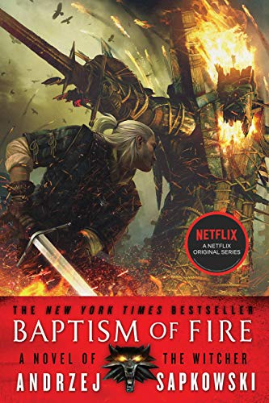
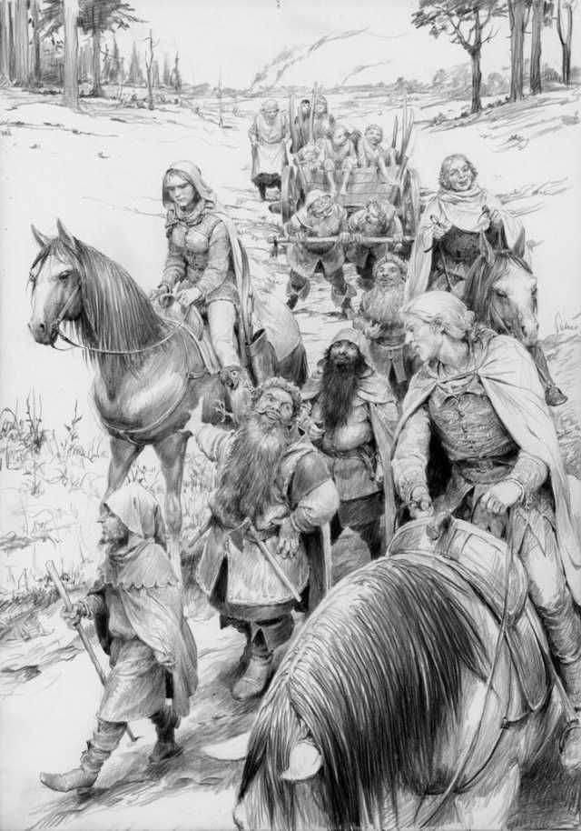

Baptism of Fire (Polish: Chrzest ognia), written by Andrzej Sapkowski, was first published in Poland in 1996 and is the fifth book in The Witcher series and the third novel in the saga, thus continuing the saga of Geralt and Ciri directly onwards from the end of Time of Contempt.
Buy Baptism Of Fire Here
Baptism Of Fire US Cover Published 24-June-2014
Geralt recovers in Brokilon forest after the Thanedd incident, but he is intent on leaving as quickly as possible and continuing on his path to find Ciri. In Brokilon, he meets a young woman who will follow him on his journey towards Nilfgaard. Meanwhile, Ciri has settled into a life with some people elsewhere whom she finally can call her friends. The witcher, accompanied by Dandelion and the young woman he meets in Brokilon, undertake a dangerous journey, meeting new people along the way and discovering the truth about the mysterious Black Rider who has been plaguing Ciri's dreams. One of the new friends they make along the way turns out to be rather interesting...
While recovering in Brokilon from his injuries sustained during the Thanedd coup, Geralt meets Milva, a hunter and expert archer. Her mastery of the bow is unequalled. Despite not particularly liking the convalescing witcher, she decides to follow Geralt, who is accompanied by Dandelion, on his way towards Nilfgaard and hopefully, Ciri. The journey is not easy, the war is encroaching seemingly from all directions and nearly every city is ablaze. Along their journey they meet a group of dwarves led by one Zoltan Chivay. As it seems they are all going in the same direction, Geralt's party joins the group who are also shepherding some refugee women and children.
At several points in their journey, Geralt and his companions come across Cahir, the erstwhile "Black Rider" that plagued Ciri's dreams. Initially, the knight is being transported as a prisoner by some hawkers, when Geralt spares his life for the second time. However, the witcher wants nothing to do with the young Nilfgaardian and leaves him to his own devices, Cahir is ever persistent and continues to shadow the witcher and his entourage. Eventually, through Milva's intervention, the young knight comes to join the group. Finally, the troupe is joined by Regis, a vampire, some might say "monster", who rather surprisingly becomes the monster hunter's good friend. Regis proves invaluable for his medical skills.
Along their journey they meet a group of dwarves led by one Zoltan Chivay. As it seems they are all going in the same direction, Geralt's party joins the group who are also shepherding some refugee women and children. At several points in their journey, Geralt and his companions come across Cahir, the erstwhile "Black Rider" that plagued Ciri's dreams. Initially, the knight is being transported as a prisoner by some hawkers, when Geralt spares his life for the second time. However, the witcher wants nothing to do with the young Nilfgaardian and leaves him to his own devices, Cahir is ever persistent and continues to shadow the witcher and his entourage. Eventually, through Milva's intervention, the young knight comes to join the group. Finally, the troupe is joined by Regis, a vampire, some might say "monster", who rather surprisingly becomes the monster hunter's good friend. Regis proves invaluable for his medical skills.
As the group travels east, they are inevitably caught between the warring factions which leads them into the thick of the Battle for the Bridge on the Yaruga where the group is pivotal in queen Meve's victory. Geralt had previously named himself "Geralt of Rivia" for credibility sake, however, it is shortly after this battle that Geralt is coincidentally knighted by the queen and officially becomes "Geralt of Rivia". Meanwhile, Ciri has settled into life with a party of young rebels who call themselves the Rats and has become known as "Falka". With the Rats, she experiences killing on quite a regular basis, but also forms a strong bond with Mistle. Killing ultimately becomes an obsession for the former princess.
On the island, things are in a tizzy. The girls have been temporarily moved from their usual accommodation within Aretuza to Loxia, the lowest level of the complex as the school itself is being used to accommodate the visiting sorcerers and sorceresses. That evening, Yennefer takes Geralt as her date to the reception, leaving Ciri in her room and ensuring that there is no second flight with magic.
Meanwhile, Ciri has settled into life with a party of young rebels who call themselves the Rats and has become known as "Falka". With the Rats, she experiences killing on quite a regular basis, but also forms a strong bond with Mistle. Killing ultimately becomes an obsession for the former princess.
Another background story revolves around the formation of the Lodge of Sorceresses. It turns out that Francesca Findabair managed to capture and compress Yennefer into a jade figurine following the events at Thanedd Island. It appears that the Lodge is very keen on using Ciri to their advantage in controlling the politics and prioritizing magic, which leads them to indirectly force Yennefer into joining their group. One Nilfgaardian sorceress, Fringilla Vigo, manages to help Yennefer escape from one of the Lodge meetings to rescue Ciri.
Geralt Traveling with the dwarves